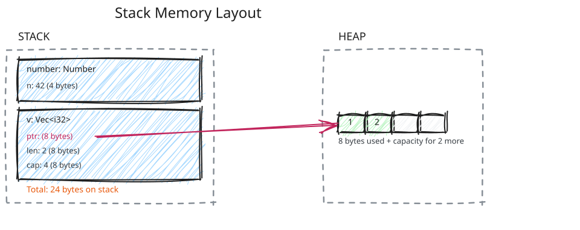

Stack, Heap & Static Data
The Stack
What lives here:
Before we categorize by type, let’s ask: Which of these types live on the stack?
- Primitives:
i32,f64,bool,char? - Enums?
- Structs?
- Arrays:
[T; N]? - Pointers:
&T,&mut T,*const T,*mut T? - Smart pointers:
String,Vec,Box(which are actually just structs)?
You might think: “Primitives live on stack, arrays live on heap…”
But actually, the type doesn’t matter. Here’s the simple rule:
The Rule: All local variables (declared with let) live on the stack.
Let’s test this. Which of these live on the stack?
#![allow(unused)]
fn main() {
let x: i32 = 0;
struct Number {
n: i32
}
let arr: [i32; 3] = [1, 2, 3];
}Answer: The values declared with let live on stack.
xlives on stack (it’s a local variable)struct Number { n: i32 }is just a type definition - doesn’t live anywhere!arrlives on stack (it’s a local variable)
When we create an instance of Number with let, that’s when it gets memory:
#![allow(unused)]
fn main() {
let num = Number { n: 42 }; // num lives on stack, so field n (as part of num) lives on stack
}No matter the type, if it’s a local variable, it lives on the stack:
#![allow(unused)]
fn main() {
let result = Ok(42); // enum on stack (including its data)
let n: i32 = 5; // primitive on stack
let ref_n: &i32 = &n; // reference (pointer) on stack, points to n (also on stack)
let p_n: *const i32 = &n; // raw pointer on stack, points to n (also on stack)
}Note: Pointers are bridges between stack and heap. They can point to stack (like
ref_nabove) or to heap (like Vec’s internalptr). We’ll explore heap allocation in detail later.
What about String, Vec, Box?
These are also just structs! Let’s see what Vec actually is:
#![allow(unused)]
fn main() {
struct Vec<T> {
ptr: *mut T, // pointer to heap data
len: usize, // length
cap: usize, // capacity
}
let number = Number { n: 42 }; // number on stack, field n on stack
let v = Vec::new(); // v (the struct) on stack
// ptr is null/dangling, len=0, cap=0
v.push(1); // FIRST push calls alloc()!
// Now ptr points to heap, len=1, cap=4 (typically)
v.push(2); // adds to heap, len=2, cap=4
}Key insight: The Vec struct itself always lives on stack. Its fields (ptr, len, cap) always live on stack. But ptr only points to heap after the first allocation (which happens during the first push() that needs capacity).
- After
Vec::new(): ptr is null (or dangling), no heap allocation yet - After first
push(1): ptr points to heap (alloc() was called), heap data exists
Stack memory layout:

We’ll explore heap and allocation in more detail in the next section.
Summary:
Your local variables (you create these):
- The Rule: Everything declared with
letin a function lives on stack - type doesn’t matter - Primitives:
i32,f64,bool,char - Structs: entire struct including all fields
- Enums: including their variant data
- Arrays:
[T; N]- all elements inline - Pointers:
&T,&mut T,*const T,*mut T- the pointer itself (8 bytes) - Smart pointer structs:
String,Vec,Box- the struct metadata on stack, the data they point to on heap
Compiler-managed (you don’t interact with these):
- Function parameters (passed via registers, may be spilled to stack)
- Return addresses (managed via
CALL/RETinstructions) - Saved registers (managed via
PUSH/POPinstructions)
Characteristics:
- Automatic management: Variables automatically disappear when they go out of scope. The CPU has built-in stack instructions (
PUSH,POP,CALL,RET) and a dedicated stack pointer register (RSPon x86-64) that make stack operations trivial. - Fast allocation: Just move the stack pointer (one CPU instruction:
sub rsp, 16to allocate 16 bytes) - Fixed size: Typically 2-8 MB (OS-dependent)
- LIFO (Last In, First Out): Like a stack of plates
- Grows downward: From high addresses to low addresses
Example:
#![allow(unused)]
fn main() {
fn example() {
let x = 42; // Allocate 4 bytes on stack
let y = vec![1]; // Allocate 24 bytes on stack (Vec metadata)
} // Stack pointer moves back, x and y are gone
}Stack overflow happens when you use too much stack space:
#![allow(unused)]
fn main() {
fn infinite_recursion() {
let huge = [0u8; 1_000_000]; // 1 MB per call!
infinite_recursion(); // Each call adds another frame
}
// Eventually: stack overflow!
}The Heap
What lives here:
Since we now know about allocation, what lives here is anything that was allocated on the heap. Heap allocation needs two components:
- A raw pointer (to track where the allocation is)
- Allocation management (calling
alloc()anddealloc())
Rather than asking “which types live on the heap?”, we should ask: which Rust standard library types manage heap allocations internally?
These types have a raw pointer field and call alloc()/dealloc():
Box<T>- theTvalue lives on heapVec<T>- the array ofTelements lives on heapString- the character data lives on heapHashMap<K, V>- the buckets and entries live on heapRc<T>/Arc<T>- theTvalue lives on heap
Important: Types like Option<T>, Result<T, E>, Cell<T>, and RefCell<T> don’t allocate on the heap by themselves. They’re just wrappers around T:
Option<i32>- entirely on stack (just an enum)Option<Box<i32>>- Box’s pointer on stack, thei32on heap (because ofBox, notOption)RefCell<Vec<i32>>- RefCell and Vec metadata on stack, Vec’s array data on heap (because ofVec, notRefCell)
How to know if a type allocates on the heap:
Use “Go to Definition” in your IDE (or check the Rust standard library docs) to inspect the type’s internal structure. If you see pointer fields like *mut T, that type manages heap allocations:
#![allow(unused)]
fn main() {
// Go to Definition on Option<T> shows:
pub enum Option<T> {
None,
Some(T), // ← Just contains T directly, no pointer!
}
// Go to Definition on Box<T> shows:
pub struct Box<T> {
ptr: NonNull<T>, // ← Let's Go to Definition on NonNull<T> to see what it is!
}
pub struct NonNull<T> {
pointer: *const T, // ← Pointer, so Box<T> manages heap allocation
}
// Go to Definition on RefCell<T> shows:
pub struct RefCell<T> {
borrow: Cell<BorrowFlag>,
value: UnsafeCell<T>, // ← Let's Go to Definition on UnsafeCell<T> to see what it is!
}
pub struct UnsafeCell<T> {
value: T, // ← Just contains T directly, no pointer!
}
}The rule: If the type has a pointer field (*mut T, *const T, NonNull<T>), it manages heap allocation. Otherwise, it’s just a wrapper that lives on the stack.
Characteristics:
- Manual management: You allocate/deallocate (Rust does this for you via
Drop) - Slower allocation: Requires finding a free block (complex algorithms)
- Large size: Typically gigabytes (depends on available RAM)
Example:
#![allow(unused)]
fn main() {
fn example() {
// Stack: 24 bytes (Vec metadata)
// Heap: 400 bytes (100 * 4-byte integers)
let v = vec![0; 100];
// Stack: 24 bytes (String metadata)
// Heap: Variable (depends on string length)
let s = String::from("hello");
// Stack: 8 bytes (Box pointer)
// Heap: 4 bytes (i32)
let b = Box::new(42);
} // Drop is called, heap memory is freed
}Heap allocation is expensive:
#![allow(unused)]
fn main() {
// Allocates once, then grows as needed (reallocating)
let mut v = Vec::new();
for i in 0..1000 {
v.push(i); // Might allocate/reallocate
}
// Pre-allocate: only allocates once
let mut v = Vec::with_capacity(1000);
for i in 0..1000 {
v.push(i); // No allocation needed
}
}Static Data (DATA Segment)
What lives here:
staticvariablesconstvalues (inlined, but literals live here)- String literals (
"hello") - Binary data embedded at compile time
Characteristics:
- Loaded at program start: Burned into the executable
- Lives forever: Never deallocated (program lifetime)
- Fixed size: Known at compile time
- Read-only or read-write: Depends on whether it’s
staticorstatic mut
Example:
static GREETING: &str = "Hello, world!"; // DATA segment
const MAX: i32 = 100; // Inlined (no memory allocated)
fn main() {
println!("{}", GREETING); // Uses data from DATA segment
let x = MAX; // Constant inlined: let x = 100;
}String literals are special:
#![allow(unused)]
fn main() {
let s1 = "hello"; // Points to DATA segment
let s2 = "hello"; // Points to SAME location in DATA segment!
assert_eq!(s1.as_ptr(), s2.as_ptr()); // Same address!
let s3 = String::from("hello"); // Allocates on heap (different address)
}